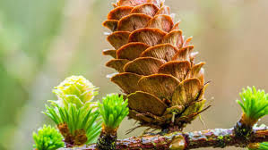

Bryophyta(lumut)

Biji Telanjang. Atau dalam arti harfiah "Gymnospermae" merupakan biji telanjang, yang mengacu pada biji yang tidak dilindungi oleh buah. Biji ini sering terletak di permukaan sisik cembung atau di dalam struktur serupa.
Memiliki pembuluh Vaskular yang berkembang dengan Baik. Gymnospermae memiliki pembuluh vaskular yang berkembang dengan baik, termasuk xilem dan floem, yang berfungsi untuk mengangkut air, nutrisi, dan hasil fotosintesis ke seluruh tumbuhan.
Tanaman yang selalu hijau. Banyak gymnospermae termasuk dalam kelompok tanaman selalu hijau, yang berarti mereka mempertahankan daun mereka sepanjang tahun.
Reproduksi dengan menghasilkan cone (Strobilus). Gymnospermae biasanya memiliki struktur berbentuk kerucut yang disebut strobilus atau cone yang berperan dalam reproduksi. Cone jantan menghasilkan serbuk sari, sedangkan cone betina mengandung telur.